이규성
Gyu-Seong Lee
- 소속
- 차의과학대학교 일반대학원 AI헬스케어융합학과 석사과정
- 연구실
- AIForA Lab 연구원, 지도교수 박대근
- 연구 분야
- 약물·항체 예측 AI, 헬스케어 데이터, 생성형 AI 기반 문헌·뉴스 분석
연표
2026
-
경영학전공 선배특강
‘AI융합비즈니스인재가 되려면 무엇을 공부해야 하나’
-
IEEE EMBC 2026 포스터 발표, 캐나다 토론토
항체의약품을 정맥주사에서 피하주사로 바꿀 때 쓰는 지식그래프 의사결정 도구. 공동 제1저자
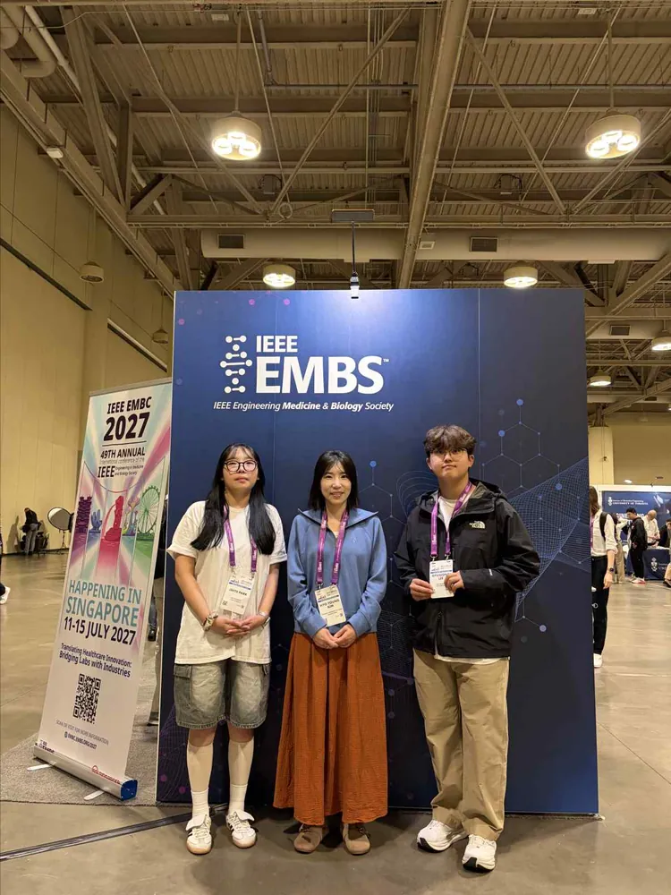
EMBS 안내판 앞에서 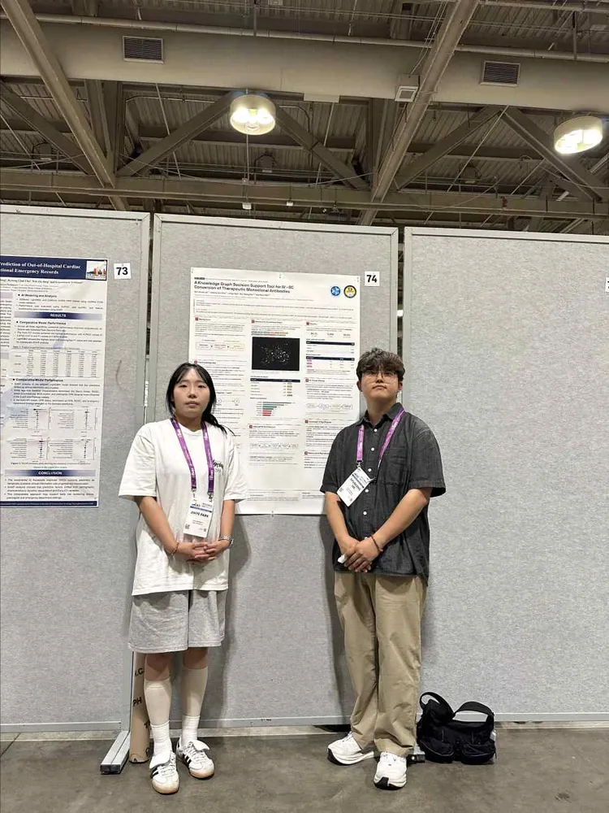
포스터 세션 -
ISMB 2026 포스터 발표, 미국 워싱턴 D.C.
생성형 AI로 논문에서 뽑은 항체 안정성 지식그래프와 예측 모델 mAb-GATED. 공동 제1저자
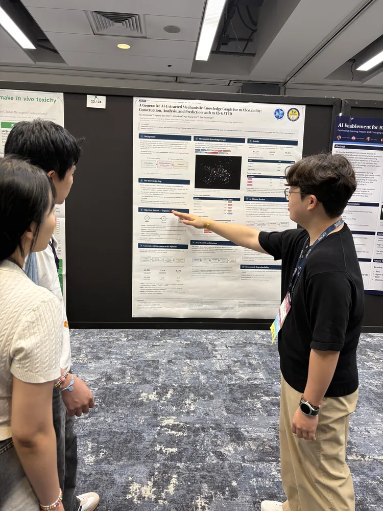
포스터 설명 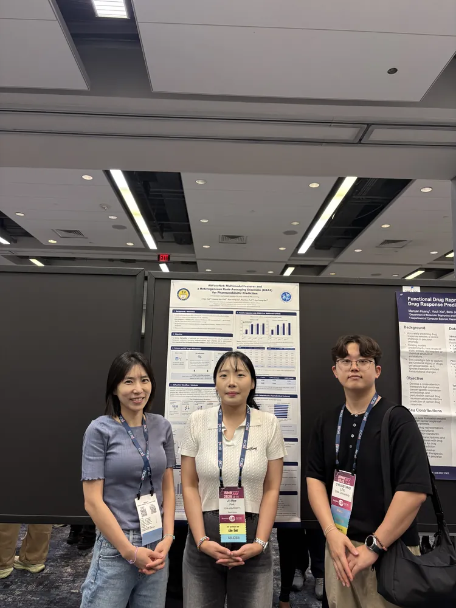
포스터 앞에서 -
디지털콘텐츠학회논문지 논문 게재
전공 상담용 아바타 챗봇의 신뢰 설계와 사용자 인식
-
(주)미들턴 산학 연구 참여
AI 기반 고령자 건강·삶의 질 개선 효과 분석
-
PLOS ONE 논문 게재, 공동 제1저자
약물 청소율과 분포용적을 하나의 모델로 함께 예측
-
PSB 2026 포스터 발표, 미국 하와이
단백질 언어모델과 승인 항체 데이터로 약동학 예측. 공저
2025
-
물류학회지 논문 게재, 제1저자
생성형 AI로 분류한 뉴스로 K-뷰티 기업의 위기 대응 분석
-
산업통상자원부 항체 제형 AI 과제 참여
정맥주사 항체의약품의 피하주사 전환 제형 기술 개발, 참여연구자
-
AI헬스케어융합학과 석사과정 입학
AIForA Lab 연구원, 지도교수 박대근
-
데이터경영학과 졸업
2024
-
학과 경영사례·데이터분석대회 2등
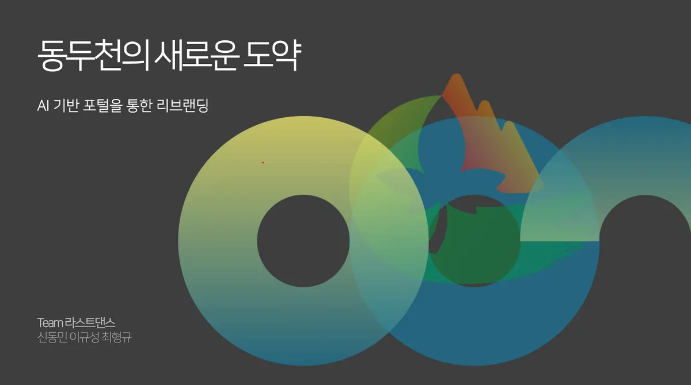
발표 자료 표지 -
연구용역 참여: 새마을금고중앙회, KDI, (주)티알엔
예금잔액 추정 모형, 수요추정 방법론, 모바일 로그 고객여정 분석
2022
-
제4회 교양 교과목 연구개발공모전 최우수상
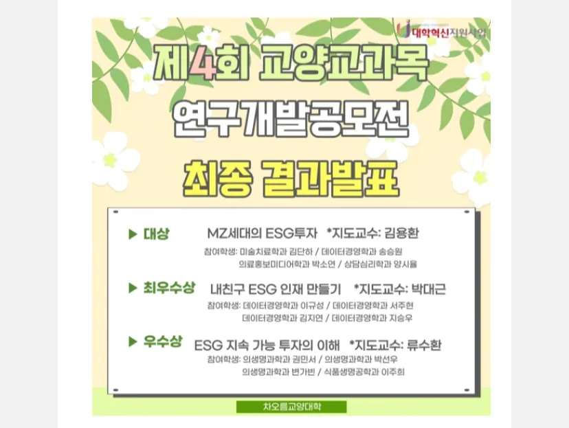
결과 발표 -
학과 경영사례·데이터분석대회 3등
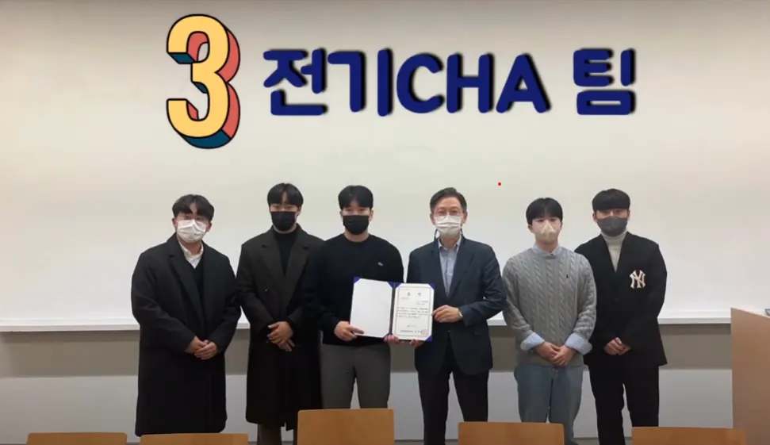
시상식 -
봉사동아리 채움 부단장
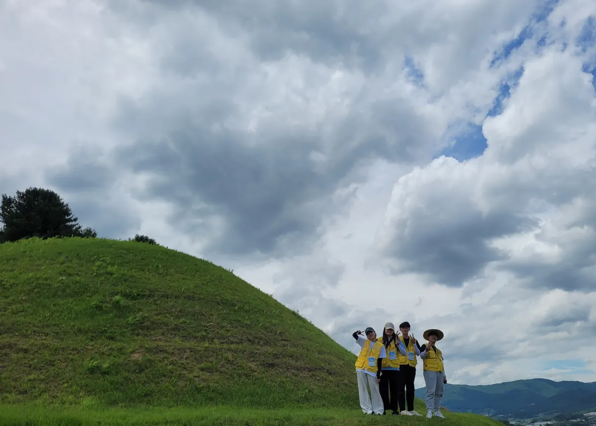
채움 봉사 -
국회예산정책처 비용추계 자동화
조세지출 일몰연장 법률안 비용추계를 R Shiny 프로그램으로 자동화
2021
-
경영혁신 연구논문 및 사례연구 대학(원)생 공모전 대상
KMA회남재단·한국능률협회컨설팅 주관, 팀 연구
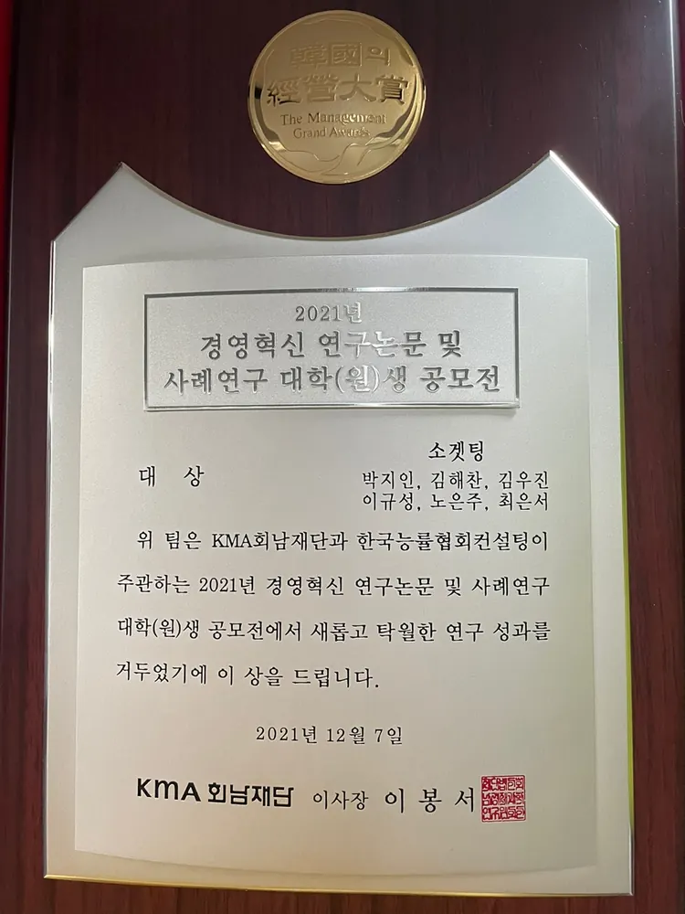
대상 상패 -
고객만족경영연구 논문 게재
MZ세대의 SNS 참여를 높이는 편의점 3사의 인스타그램·유튜브 전략
-
학과 경영사례·데이터분석대회 1등
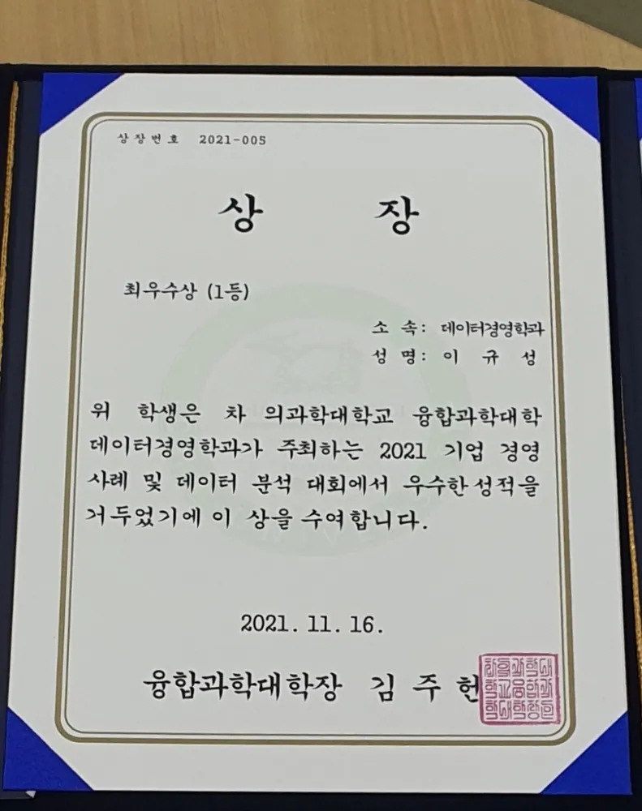
상장 -
봉사동아리 채움 단장
농촌재능나눔 대학생 활동지원사업 선정, 농촌마을 벽화 그리기
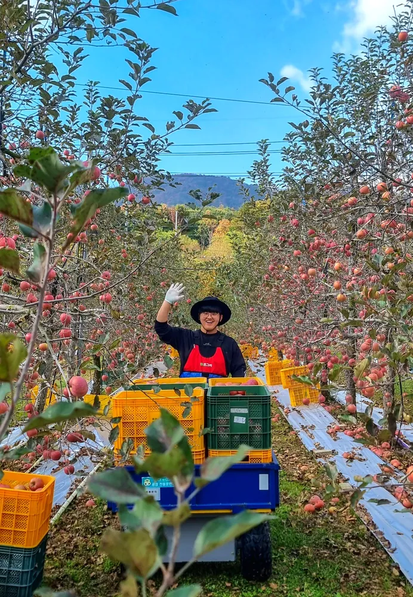
과수원 일손 돕기 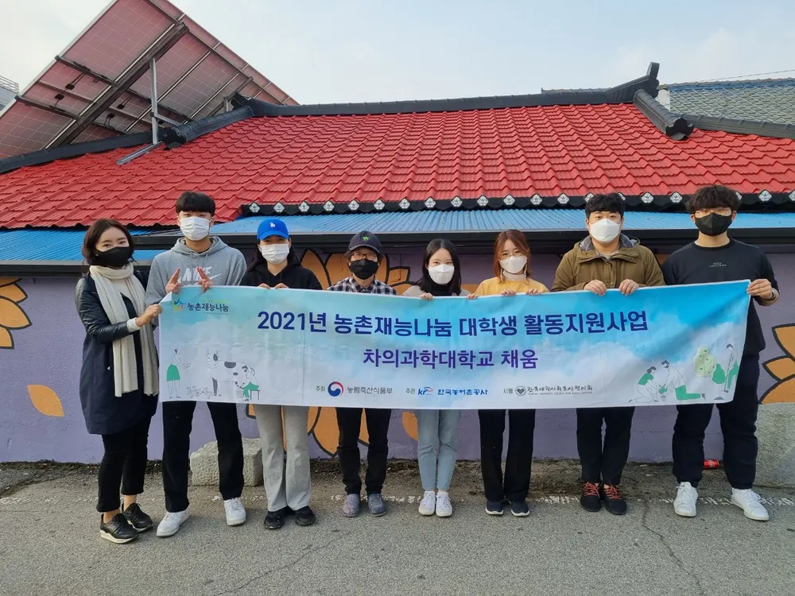
농촌재능나눔
2020
-
데이터경영학과 학생회, 합창단 차콰이어
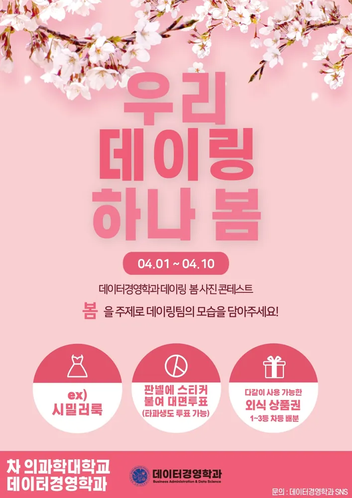
학생회 행사 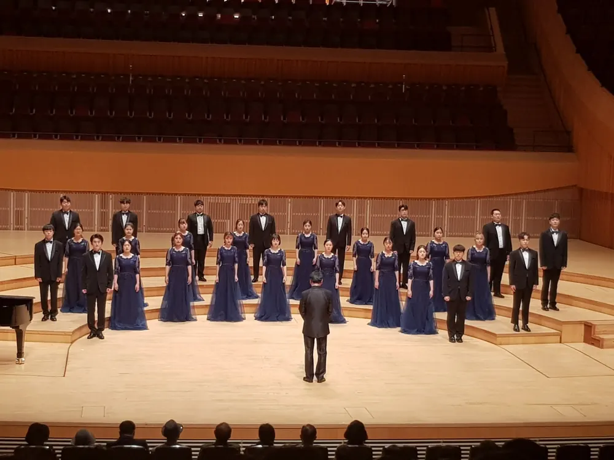
차콰이어 공연 -
차의과학대학교 데이터경영학과 입학
논문
학술지
-
Multi-task gradient boosting with multi-modal molecular representations for simultaneous prediction of drug clearance and volume of distribution
약물 청소율과 분포용적을 하나의 모델로 함께 예측
PLOS ONE 21(4), 2026. SCIE, 공동 제1저자
-
신뢰 지향 아바타 챗봇의 설계와 사용자 인식: 전공 선택과 진로 상담 사례
디지털콘텐츠학회논문지 27(7), 2026. KCI
-
The Impact of Strategic Agility on Crisis Response and Performance Visibility of K-Beauty Firms: A Media Framing Perspective
K-뷰티 기업의 전략적 민첩성과 위기 대응, 뉴스 프레이밍 관점
물류학회지 35(4), 2025. KCI, 제1저자
-
MZ세대 소비자의 SNS 능동적 참여도를 높이기 위한 인스타그램 및 유튜브 활용 전략: 편의점 3사를 중심으로
고객만족경영연구, 2021. KCI
국제학회 포스터
-
A Generative AI-Extracted Mechanistic Knowledge Graph for mAb Stability: Construction, Analysis, and Prediction with mAb-GATED
생성형 AI로 뽑은 항체 안정성 지식그래프와 예측 모델
ISMB 2026, 워싱턴 D.C. 공동 제1저자
-
A Knowledge Graph Decision Support Tool for IV to SC Conversion of Therapeutic Monoclonal Antibodies
항체의약품의 정맥주사→피하주사 전환을 돕는 지식그래프 도구
IEEE EMBC 2026, 토론토. 공동 제1저자
-
Sequence-Based PK Prediction Models for Monoclonal Antibody Formulation Optimization: Leveraging FDA/EMA-Approved Therapeutic Data and Protein Language Models
단백질 언어모델과 승인 항체 데이터로 약동학 예측
PSB 2026, 하와이. 공저
진행 중
- 타크롤리무스 혈중농도 예측: 머신러닝과 베이지안 약동학 비교(제1저자, 투고 준비)
- mAb-GATED 전체 논문(공동 제1저자)
- 석사학위논문: 다중과제 그래디언트 부스팅을 이용한 약물 청소율·분포용적 동시 예측
과제
- AI 기반 제형 최적화를 통한 정맥주사 항체의약품의 피하주사 전환 제형 기술 개발 산업통상자원부 기술혁신사업, 참여연구자
- AI 기반 고령자 건강·삶의 질 개선 효과 분석 연구 (주)미들턴
- 공무원 인건비·연금 재정전망 모형 연구 국회예산정책처
- 쇼핑엔티 이용자 로그 분석을 통한 실질적 마케팅 전략 및 AI 솔루션 탐색 (주)티알엔
- 새마을금고 예금잔액 추정 모형 개발 및 성과분석 모형 구축 새마을금고중앙회파이썬으로 예금잔액 추정 모형 개발과 시각화
- 모바일 로그데이터 기반 고객여정분석 연구 (주)티알엔데이터베이스 구축, 전처리와 분석(파이썬)
- 비선형 추세 수요추정 방법론 사례분석 한국개발연구원(KDI)
- 사립학교 교직원연금 가입자 전망모형 개선전망 모형 개선과 시각화(R, 엑셀)
- 조세지출 일몰연장 법률안 비용추계 자동화 국회예산정책처R Shiny로 자동화 프로그램 개발
- 입학처 종단 연구 데이터 분석 차의과학대학교시계열 데이터 시각화와 분석(R, 엑셀)
- 의정부 용현 산업단지 발전전략경영분석, 실태·수요·경쟁력 조사
만든 것
- 경진대회 AI 친구 봇비즈니스모델개발 경진대회 팀들의 봇을 한곳에 모아 복구하고 운영
- 항체 안정성 지식그래프논문에서 생성형 AI로 뽑은 인과관계를 연결한 네트워크
- 공공 공고 트래커나라장터·기업마당 등 공고를 매일 자동 수집
- 한국 거시경제 대시보드ECOS·KOSIS 경제 시계열을 매주 자동 수집
- 졸업요건 자가진단 도구학과 졸업요건을 연도별로 데이터화, 학내 전용
- hwpx 스킬, 뉴스 연구 스킬한글 문서 자동화와 뉴스 수집·분류를 AI 에이전트용 스킬로 정리
교육
- 경영학전공 선배특강: AI융합비즈니스인재가 되려면 무엇을 공부해야 하나
- 수업 실습 환경 구축: AI융합프로젝트II, 언론과PR글쓰기, 상품분석 PBL
- AX Studio 강의 영상과 안내서: 내 포털 만들고 게시하기
- 항체 안정성 지식그래프 교육 패키지: 교안, Colab 실습
자격
ADsP(데이터분석 준전문가), ITQ OA Master, DIAT 스프레드시트, 빅데이터분석기사 필기